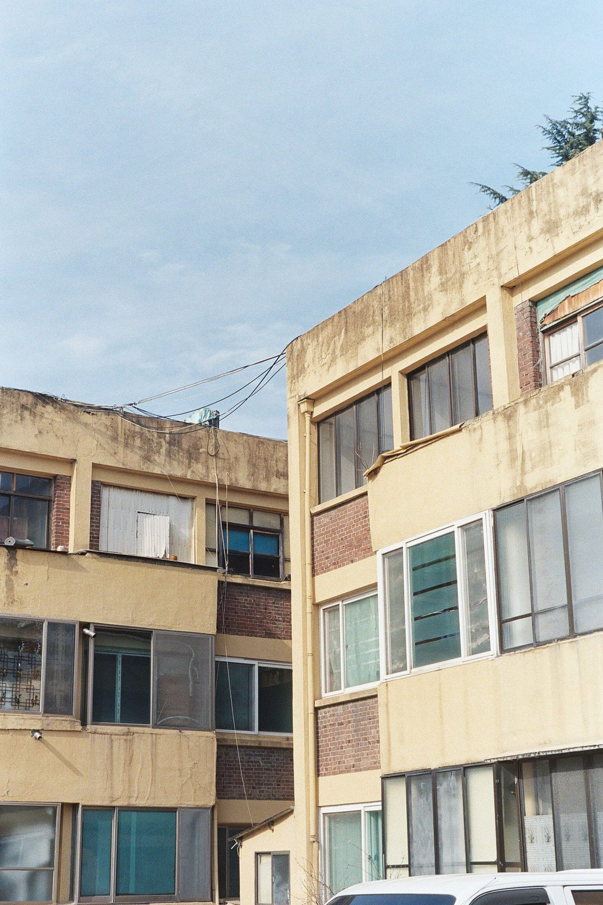
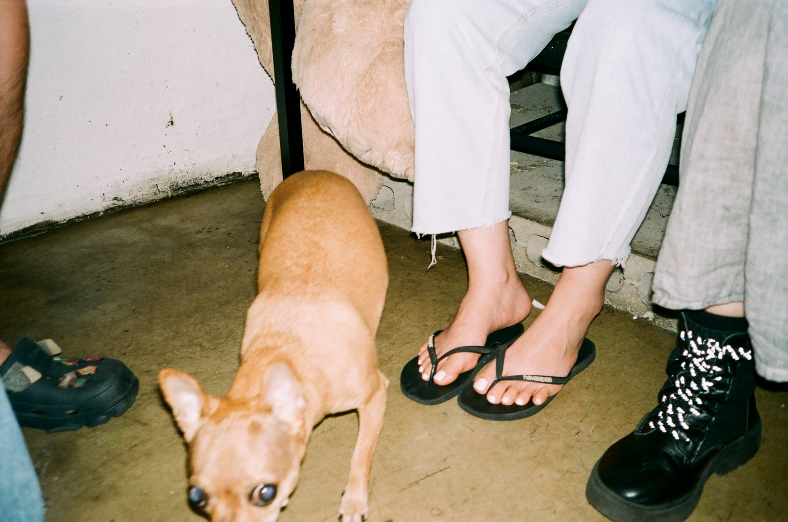
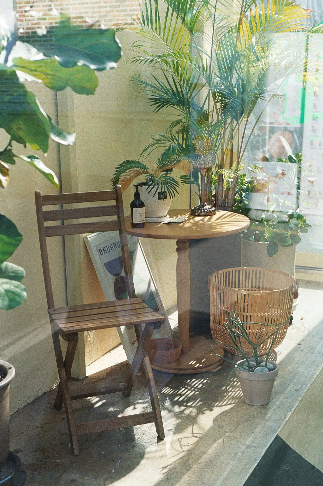

"좋은 사진을 위해, 우리가 늘 비싼 필름이 필요했던 건 아닙니다."
필름 가방을 열면 누구에게나 '아껴 쓰는 칸'과 '막 쓰는 칸'이 있다. 울트라맥스 400은 대개 후자에 들어간다. 한 통 더 사도 부담 없고, 어떤 카메라에 물려도 어색하지 않은 필름. 그런데 막상 현상을 맡기고 스캔본을 받아보면, 이 필름을 '막 쓰는 칸'에 넣어둔 게 늘 미안해진다.
울트라맥스 400을 이야기할 때 먼저 짚어야 할 건, 이 필름이 브랜드 포지셔닝의 덕을 못 본 필름이라는 점이다. 혈통으로 보면 코닥 골드 400의 연장선에 있지만, 'Gold'라는 이름을 더는 함께 쓰지 않게 되면서 골드가 누리던 마니아층의 지지에서 비켜나 있다. 게다가 '일반 소비자용 필름(Consumer Film)'으로 묶이다 보니 '싼 만큼 품질도 그저 그렇겠지'라는 선입견이 따라붙었다. 단순해진 패키지도 한몫했다. 코닥이 전반적인 디자인을 간결하게 바꾸면서 많은 이들이 그 변화를 시큰둥하게 받아들였다.
겉모습으로 판단하지 않는다고들 하지만, 현실에선 첫인상이 크다. 엑타와 울트라맥스를 나란히 두면 누구라도 엑타가 더 '전문가용'처럼 보인다. 그러나 울트라맥스를 '그저 소비자용 필름'으로만 치워둔다면, 그건 꽤 큰 실수다.
만만히 볼 필름이 아니다
울트라맥스는 코닥 T-Max와 같은 T-그레인 에멀전 기술을 쓴다. 덕분에 ISO 400이라는 넉넉한 감도에서도 색과 디테일이 쉽게 무너지지 않는다. 코닥은 이 필름을 이렇게 소개한다. 다양한 상황에서 안정적으로 더 나은 사진을 얻게 해주고, 어두운 곳에서 노출 부족을 줄여주며, 줌 렌즈를 써도 결과가 좋고, 플래시가 닿는 범위가 넓으며, 빠르게 움직이는 순간을 또렷하게 잡고, 손떨림의 영향을 줄여준다고. 결국 이 모든 장점을 떠받치는 건 ISO 400이라는 감도다. 밝지 않은 자리에서도 셔터를 한 박자 빠르게 끊게 해주는 여유. 일상 스냅에서 이만한 무기가 없다.
색, 이 필름의 진짜 무기
울트라맥스의 색은 밝고 깨끗하고 선명하다. 푸른 하늘은 깊게 내려앉고, 빨강과 주황은 생기 있게, 초록은 풍부하면서도 과하지 않게 떨어진다. 어느 한 색으로 치우치지 않고 전체 균형이 좋다는 게 핵심이다. 미묘한 중간색도 깔끔하게 받아내고 피부 톤도 자연스럽다. 다만 과노출로 가면 피부가 살짝 노랗게 뜨는 버릇이 있으니 거기까진 욕심내지 않는 편이 좋다. 무채색에서도 색이 번지지 않고 정갈하게 남는다.

사실 소비자용 필름이라는 점을 감안하면 평균만 해줘도 충분하다. 그런데 울트라맥스의 색은 그 기대를 넘는다. '가성비 필름'이 아니라, 한 통으로 웬만한 장면을 다 받아내는 올라운더에 가깝다.
그레인, 단점이라기보다 성격
솔직히 울트라맥스의 그레인이 빼어나진 않다. 그렇다고 거슬릴 만큼 거칠지도 않다. 단점이라기보다 이 필름의 성격에 가깝다. 포트라 400만큼 곱냐고 묻는다면 아니다. Print Grain Index로 보면 포트라 400이 37, 울트라맥스 400이 44, 포트라 800이 46이다. 숫자만 보면 울트라맥스의 입자는 포트라 800과 비슷한 자리에 있다. 다만 포트라 800은 감도가 800이라는 걸 떠올리면 그 정도 입자는 '고운 편'으로 쳐준다. 결국 그레인은 취향의 영역이다. 좋아하는 사람도, 피하려는 사람도 있다. 우리 경험으로는 울트라맥스의 입자가 사진을 망쳐놓은 적은 없었다. 스캔이나 인화에서 눈에 들어오긴 해도 오히려 필름다운 질감을 만들어준다. 필름을 오래 써온 사람이라면 익숙하고 편한 느낌일 것이다.
인물도 받아내는 필름

인물에서도 울트라맥스는 좋은 답을 준다. 엑타가 밝은 피부를 강한 주황빛과 붉은기로 끌고 가는 반면, 울트라맥스는 적정 노출에서 어떤 피부 톤이든 자연스럽게 앉힌다. 비결은 단순하다. 박스 감도(ISO 400) 그대로 찍는 것. 과하게 밀거나 당기면 미묘한 색 변화(Color Shift)가 생길 수 있다. 물론 스캔 후 보정으로 어렵지 않게 잡지만, ISO 400 필름을 굳이 무리시킬 이유가 없다. 적정 감도를 지키며 찍는 게 가장 좋은 결과로 가는 지름길이다.
그럼에도, 울트라맥스
그렇다면 울트라맥스가 엑타나 프로비아처럼 강렬한 풍경을 뽑아낼 수 있을까. 가능은 하다. 전문가용 필름만큼 극도로 미세한 입자는 아니어도, 선명하고 부드러운 이미지를 만들 해상력은 충분하다. 그래도 돈 받는 촬영을 맡는다면? 아마 울트라맥스를 걸지는 않을 것이다. 그 자리엔 포트라를 물리겠지.
그럼에도 울트라맥스를 고를 이유는 많다. 전문가용 필름의 절반 값이면 손에 들어온다. 후지의 소비자용 필름보다 조금 비싸긴 해도, 우리는 울트라맥스가 더 일관되고 예측 가능한 결과를 준다고 본다. 그리고 가장 중요한 이유는 따로 있다. 이 필름으로는 좋은 사진을 '쉽게' 얻을 수 있다는 것.

어디를 가든, 무엇을 찍든, 어떤 카메라를 들든, 울트라맥스를 거는 순간 내 실력이 허락하는 만큼의 사진은 나온다는 확신이 든다. 거창한 약속은 아니다. 그런데 필름 한 통에 바라는 게 사실 그 이상도 아니지 않나.
이번 호에 담긴 사진들도 그 확신에서 출발했다. 특별한 장비도, 특별한 날도 아닌 평범한 하루. 울트라맥스 한 통이면 충분했다.
세 작가가 담은 울트라맥스의 하루
박순렬, 노애경, 장형수. 창간호에는 세 작가가 Kodak UltraMax 400으로 기록한 평범한 하루가 더 깊이 담겨 있습니다.